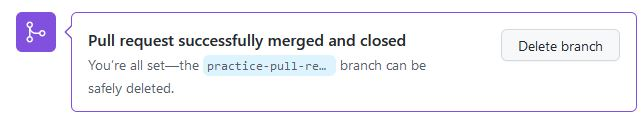

Harjoitus 3 - Merge pull request
Olet saattanut tehdä tämän tehtävän jo elokuussa
Pull requestilla toinen käyttäjä voi ehdottaa sivuhaaran (branch) yhdistämistä gitin päähaaraan (master/main)
GitHub repoosi on tehty uusi haara nimeltä practice-pull-request
Tähän haaraan on lisätty kansioita ja html-tiedosto exercises/e3/index.html
Yhdistä haaran (branch) sisältö repositoryn päähaaraan (master/main)
- Tallenna paikallisella koneella tehdyt muutokset gittiin.
- Toteuta yhdistäminen GitHubin Pull requests -välilehdellä.
- Synkronoi paikallinen kansio komennolla git pull
- Jos pull requestin yhdistämisessä tulee ristiriita olemassa olevien tiedostojen kanssa,
niin Git Bash tai VS Code avaa tästä raportin automaattisesti. Totea koodimuutokset ja sulje raportti.
- Nyt voit taas commitoida tuttuun tapaan GitHubin main/master haaraan
joko VS Coden git-välilehdeltä tai komentoriviltä


